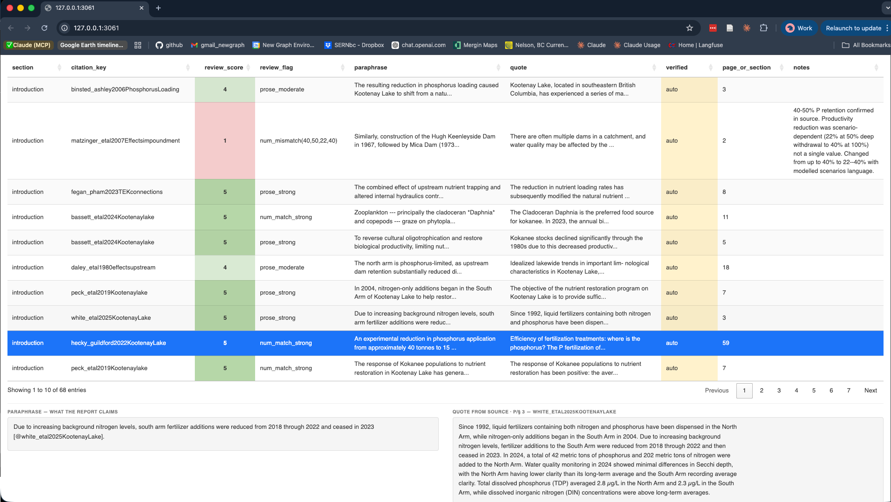
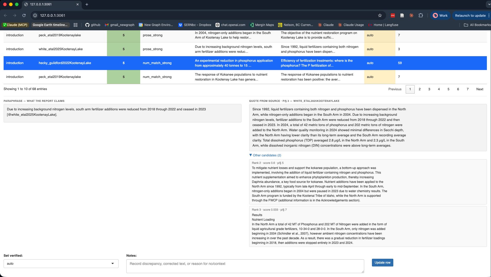

The problem
When a report is drafted with LLM assistance, a specific failure mode arises: the citation key is real, the prose sounds authoritative, but the cited source does not actually support the specific claim made. A percentage gets transposed, a finding from one paper gets attributed to another, or a result gets quietly generalised.
cred addresses this systematically. For every
@citekey in a bookdown report it locates the source
document, finds the best-matching passage, and surfaces it alongside the
original claim so a human can make the call.
Workflow at a glance
Rmd files --> audit CSV --> Zotero lookup --> auto-fill quotes --> score --> review| Step | Function | What it does |
|---|---|---|
| 1 | crd_aud_write() |
Scan Rmd files, extract citations with paraphrase context, write CSV |
| 2 | crd_aud_eval_inline() |
Resolve inline R expressions so matching has real numbers |
| 3 | crd_aud_verify_all() |
Look up Zotero attachments, search each source, fill
quote and verified
|
| 4 | crd_aud_verify_abstract() |
For remaining NA rows, score against Zotero abstract text |
| 5 | crd_aud_score() |
Add review_score (1–6) and
review_flag
|
| 6 | crd_aud_review() |
Launch interactive Shiny app for human review |
Walkthrough with toy data
cred ships toy source documents and a minimal Zotero
SQLite in inst/extdata/. The walkthrough below runs all
steps silently, then shows the scored results.
Scored results
crd_aud_write() extracted 9 citation rows from 2
chapters. crd_aud_verify_all() searched each source
document for the best-matching passage.
crd_aud_verify_abstract() handled the row with no file.
crd_aud_score() assigned review priority.
Reading the results:
-
auto(yellow) — passage found, score >= threshold. Compare paraphrase vs quote — notice the wording differs but the facts match. -
no_match(green) — the Pacific Salmon Treaty row citessmith2020SalmonHabitat, a freshwater habitat paper with nothing about harvest allocation. This is the core failure modecredsurfaces: real key, plausible prose, wrong source. -
abstract_match(blue) —doe2021NoFilehas no PDF, but the Zotero abstract confirms the citation is in the right domain. Not as strong asauto. - Score 1 = most suspect (no_match, or numbers don’t appear in quote). Score 4–5 = strong match. Review low scores first.
Resolving inline R expressions
One of the toy rows contains inline R — the paraphrase references
variables that would normally come from data pipelines during bookdown
rendering. crd_aud_eval_inline() (step 2) resolved these
before verification ran. The raw paraphrase is always preserved;
paraphrase_eval has the resolved version:
#> paraphrase: Tagged juvenile chinook accessed floodplain side channels at `r n_sites` beaver dam sites, achieving growth rates `r growth_pct`% higher than mainstem fish [@jones2019BeaverEcology].
#> paraphrase_eval: Tagged juvenile chinook accessed floodplain side channels at 3 beaver dam sites, achieving growth rates 40% higher than mainstem fish [@jones2019BeaverEcology].The call that produced this:
# In a real project these come from your data pipeline
n_sites <- 3
growth_pct <- 40
crd_aud_eval_inline(audit_file, overwrite = TRUE)
#> Evaluated inline R in 1 row(s)crd_aud_score() uses paraphrase_eval when
available, so the numbers can be compared against the quote. In your
pipeline, source your project setup first so the variables exist:
source("scripts/packages.R")
source("scripts/functions.R")
crd_aud_eval_inline("qa/citation_audit.csv")If a variable doesn’t exist, it warns and leaves that expression as-is. Run from the same R session where your book builds.
Interactive review
crd_aud_review("qa/citation_audit.csv")
Filter by status, citation key, or section. Click any row to open the detail panel:

The detail panel shows paraphrase and quote side by side. Click
Other candidates to expand alternative passages with
their scores. Set verified to yes,
no, corrected, or context, add
notes, click Update row, then Save to
CSV.
The verified values
| Value | Meaning | Next action |
|---|---|---|
auto |
Source matched above threshold | Read quote vs paraphrase; set yes/no/corrected |
abstract_match |
Zotero abstract matched – no full text | Judge if abstract is sufficient; set context or get PDF |
no_match |
Source exists, no paragraph matched | Check source manually; may be a wrong citation |
yes |
Reviewed and confirmed accurate | Done |
no |
Claim not supported by source | Fix the claim in the Rmd |
corrected |
Claim was wrong; you fixed it | Done |
context |
Source provides background, not a direct factual claim | Done |
NA |
No source file and no abstract in Zotero | Attach PDF to unlock |
Setting up your report
Directory convention
Put the audit CSV and pipeline script in a qa/ directory
at your report root:
my-report/
+-- 0100-introduction.Rmd
+-- 0200-methods.Rmd
+-- scripts/
| +-- citation_audit.R # repeatable pipeline
+-- qa/
+-- citation_audit.csv # the audit (git-tracked)The pipeline script
Create scripts/citation_audit.R – this is the one file
you (or an LLM) run every time. It handles first run vs. update
automatically:
# scripts/citation_audit.R -- repeatable citation audit pipeline
library(cred)
audit_file <- "qa/citation_audit.csv"
# Step 1 -- Extract or update citations from Rmd chapters
if (file.exists(audit_file)) {
crd_aud_upd(audit_file)
} else {
crd_aud_write(out_file = audit_file)
}
# Step 2 -- Resolve inline R (run from session with project variables loaded)
# source("scripts/packages.R"); source("scripts/functions.R") # if needed
crd_aud_eval_inline(audit_file)
# Step 3 -- Auto-fill quotes from Zotero source files
crd_aud_verify_all(audit_file)
# Step 4 -- Abstract fallback for NA rows
crd_aud_verify_abstract(audit_file)
# Step 5 -- Score for review priority
crd_aud_score(audit_file)
# Step 6 -- Summary
crd_aud_summary(audit_file)Run the full pipeline after adding new citations or attaching new PDFs in Zotero. Run just the quick update after editing existing text:
# Quick -- re-extract and re-score only (seconds, no Zotero lookup)
crd_aud_upd("qa/citation_audit.csv")
crd_aud_score("qa/citation_audit.csv")When to commit
The CSV is current state; git history is the audit trail.
| After… | Commit? | Why |
|---|---|---|
| Full pipeline run | Yes | Captures auto/no_match/abstract_match state |
| Shiny review session (Save to CSV) | Yes | Preserves human judgments |
Quick crd_aud_upd() after Rmd edits |
Yes | Records paraphrase changes + fuzzy matches |
A good commit message:
qa: update citation audit after intro rewrite or
qa: review 12 auto rows, 3 corrected.
How crd_aud_upd() preserves your work
When you reword a sentence in the Rmd, the paraphrase text changes.
crd_aud_upd() handles this in two passes:
-
Exact join on
(section, citation_key, paraphrase)– unchanged rows carry forward all manual columns -
Fuzzy fallback – unmatched rows are compared by
token similarity to existing rows with the same
(section, citation_key). If overlap >= 0.4, manual columns (verified, quote, notes, scores) carry forward to the new text
The console reports what happened:
94 rows (13 new/unverified, 1 fuzzy-matched).
How source matching works
Both PDF/docx matching and abstract matching use the same token overlap algorithm:
- Strip inline R,
@citekeys, and markdown punctuation fromparaphrase - Extract word tokens (>= 4 characters) and numeric tokens separately – numbers are the most discriminative signals
- Score each paragraph: proportion of query tokens found in the passage
- Accept the top-scoring passage if score >=
min_score(default 0.2)
What 0.2 means: 1 in 5 query tokens must appear in the passage. Deliberately permissive – a false positive costs seconds of review; a false negative means searching the PDF yourself.
crd_aud_verify_all("citation_audit.csv", min_score = 0.2) # default
crd_aud_verify_abstract("citation_audit.csv", min_score = 0.2) # same thresholdRe-run with overwrite_verified = TRUE to reprocess
machine-assigned rows without touching human-reviewed ones.